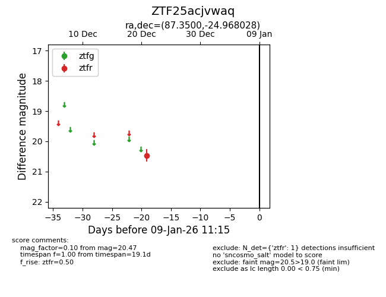
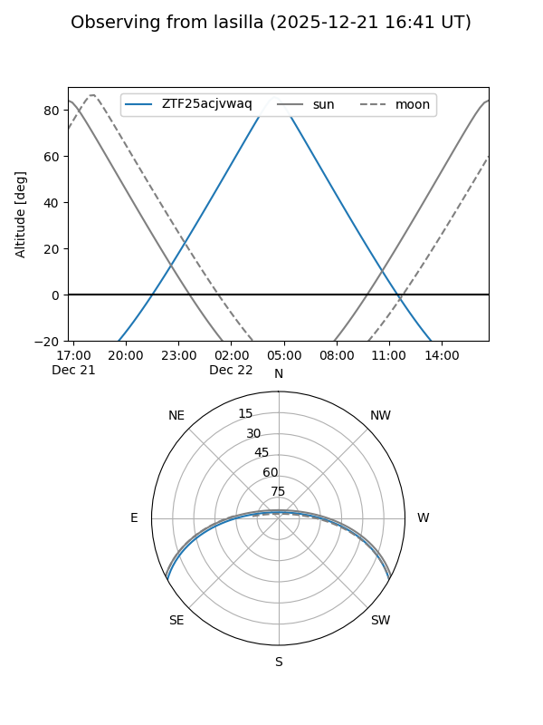
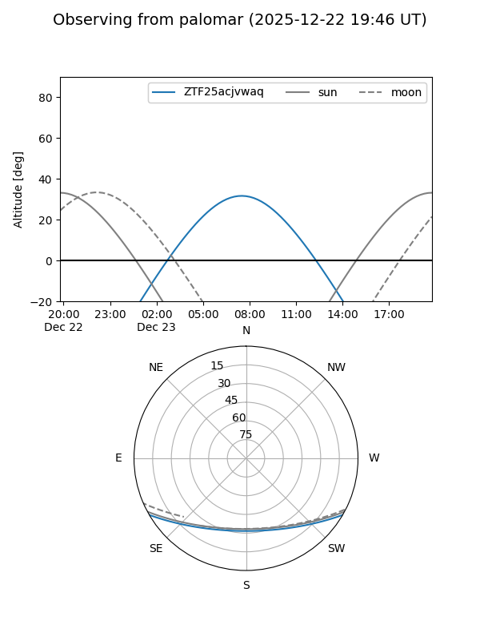

ZTF25acjvwaq
Target ZTF25acjvwaq at 2025-12-21 08:23
Aliases and brokers:
FINK: fink-portal.org/ZTF25acjvwaq
Lasair: lasair-ztf.lsst.ac.uk/objects/ZTF25acjvwaq
ALeRCE: alerce.online/object/ZTF25acjvwaq
alt names
ZTF25acjvwaq (ztf,fink_ztf)
Coordinates:
equatorial (ra, dec) = 87.3500,-24.96803
equatorial (HMS+DMS) = 05:49:24.01,-24:58:04.90
galactic (l, b) = (229.8164,-24.09282)
Flags:
Photometry:
last ztfr=20.47
1 ztfr detections
Lightcurve

Visibility


Additional plots